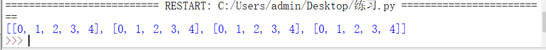

1、对列表进行排序：
（1）使用列表对象的sort()方法：
列表对象提供了sort()方法用于对原列表中的元素进行排序。排序后原列表中的元素顺序将发生改变。改变对象的sort()方法的语法格式如下：
listname.sort(key=None,reverse=False)
#listname：表示要进行排序的列表。
#key：表示指定从每个元素中提取一个用于比较的键（例如设置”key=str.lower“表示在排序时不区分字母大小写）
#reverse：可选参数，如果将其指定为True，则表示降序排列；如果为False，则表示升序排列，默认为升序排列。grade=[74,90,78,84,98,62,75,82]
print("原成绩：",grade)
grade.sort()
print("升 序：",grade)
grade.sort(reverse=True)
print("降 序：",grade)使用sort()方法进行数值列表的排序比较简单，但是使用sort()方法对字符串列表进行排序时，采用的规则是先对大写字母排序，然后再对小写字母排序。如果不区分大小写对字符串列表进行排序，需要指定其key参数。
char=["Curry","Bome","deven","ansible"]
print("原字符串顺序：",char)
char.sort()
print("默认大写字母优先排序：",char) #先对大写字母进行排序，然后再对小写字母进行排序。
char.sort(key=str.lower)
print("不区分大小写字母排序：",char)采用sort()方法对列表进行排序时，对中文的支持不好，排序的结果与我们常用的音序排序法或者笔画排序法都不一致，如果需要实现对中文内容的列表排序，还需要重新编写相应的方法进行处理，不能直接使用sort()方法。
（2）使用内置的sorted()函数实现：
再Python中，提供了一个内置的sorted()函数，用于对列表进行排序。使用该函数进行排序后，原列表的元素顺序不变。
sorted(iterable,key=None,reverse=False)
#iterable：表示要进行排序的列表名称
#key：表示指定从每个元素中提取一个用于比较的键（例如，设置”key=str.lower“表示在排序时不区分字母大小写）
#reverse：可选参数，如果将其指定为True，则表示降序排列；如果为False，则表示升序排列，默认为升序排列。num=[97,65,75,78,83,91,73,89]
print("原序列：",num)
num_as=sorted(num)
print("升 序：",num_as)
num_des=sorted(num,reverse=True)
print("降 序：",num_des)列表对象的sort()方法和内置sorted()函数的作用基本相同；不同点是在使用sort()方法时，会改变原列表的元素排列顺序，而是用sorted()函数时，会建立一个原列表的副本，该副本为排序后的列表。
2、列表推导式：
使用列表推导式可以快速生成一个列表，或者根据某个列表生成满足指定需求的列表。列表推导式通常有以下几种常用的语法格式。
（1）生成指定范围的数值列表，语法格式如下：
list = [Expression for var in range]
#list：表示生成的列表名称。
#Expression：表达式，用于计算新列表的元素。
#var：循环变量。
#range：采用range()函数生成的range对象。import random
randomnumber=[random.randint(10,100) for i in range(10)]
print("生成的随机数为：",randomnumbe（2）根据列表生成指定需求的列表，语法格式如下：
newlist = [Expression for var in list]
#newlist：表示新生成的列表名称
#Expression：表达式，用于计算新列表的元素
#var：变量，值为后面列表的每个元素值
#list：用于生成新列表的原列表commodity=[80,40,60]
print("原商品的价格分别：",commodity)
new_commodity=[int(i*0.5) for i in commodity]
print("打五折后的价格为：",new_commodity)（3）从列表中选择符合条件的元素组成新的列表，语法格式如下：
newlist = [Expression for var in list if condition]
#newlist：表示新生成的列表名称
#Expression：表达式，用于计算新列表的元素
#var：变量，值为后面列表的每个元素值
#list：用于生成新列表的原列表
#condition：条件表达式，用于指定筛选条件commodity=[6500,3000,5400,5800,4200]
print("原商品列表：",commodity)
sale=[ i for i in commodity if i>5000]
print("价格高于5000的：",sale)3、二维列表的使用：
二维列表中的信息以行和列的形式表示，第一个下标代表元素所在的行，第二个下标代表元素所在的列。
例如电影院的座位号，每排每列就是一个二维列表。
（1）直接定义二维列表：
在Python中，二位列表是包含列表的列表，即一个列表的每一个元素又都是一个列表。
List=[[10,20,30,40,50],
[11,21,31,41,51],
[12,22,43,42,52],
[13,23,33,43,53]]
print(List)（2）使用嵌套的for循环创建：
创建二位列表，可以使用嵌套的for循环实现。
创建一个包含4行5列的二位列表。
arr = [] #创建一个空列表
for i in range(4):
arr.append([]) #在空列表中再添加一个空列表
for j in range(5):
arr[i].append(j) #为内层列表构建元素
print(arr) #外层循环控制行，内层循环控制列

（3）使用列表推导式创建：
使用列表推导式也可以创建二维列表，推荐使用这种方法创建二维列表。
使用列表推导式创建一个包含4行5列的二维列表
arr = [[j for j in range(5)] for i in range(4)]
print(arr)创建二维数组后，可以通过以下语法格式访问列表中的元素：
listname[下标1][下标2]
#listname：列表名称
#下标1：表示列表中第几行，下标值从0开始，即第一行的下标为0.
#下标2：表示列表中第几行，下标值从0开始，即第一列的下标为0.以上结果是访问第一行的第三列。
练习：使用嵌套的for循环将柳宗元的《江雪》分别横板和竖版输出
str1="千山鸟飞绝"
str2="万径人踪灭"
str3="孤舟蓑笠翁"
str4="独钓寒江雪"
verse=[list(str1),list(str2),list(str3),list(str4)] #定义一个二维表
print("横板")
for i in range(4): #循环古诗得每一行
for j in range(5): #循环每一行的每列
if j==4: #如果是一行中的最后一个字
print(verse[i][j]) #换行输出
else:
print(verse[i][j],end="") #不换行输出
verse.reverse() #对列表进行逆序排列
print("\n竖版")
for i in range(5): #循环每一行的而每列
for j in range(4): #循环逆序排列后的第一行
if j==3: #如果是最后一行
print(verse[j][i]) #换行输出
else:
print(verse[j][i],end="") #不换行输出
在上面的代码中，list()函数用于将字符串转换为列表；列表对象的reverse()方法用于对列表进行逆序排列，即将列表的最后一个元素移到第一个，倒数第二个元素移到第二个，以此类推。
4、元组：
元组（tuple）是Python中另一个重要的序列结构，与列表类似，也是由一系列按特定顺序排列的元素组成，但是它是不可变序列，因此，元组也称为不可变的列表。
在形式上，元组的所有元素都放在一对括号（）中，两个相邻元素使用逗号“，”分隔。在内容上，可以将整数、实数、字符串、列表、元组等任何类型的内容放入到元组中，并且在同一个元组中，元素的类型可以不同，因为他们之间没有任何关系。
通常情况下，元组用于保存程序中不可修改的内容。
从元组和列表的定义上看，这两种结构比较相似。二者之间的主要区别为：元组是不可变序列，列表是可变序列。即元组中的元素不可以单独修改，而列表则可以任意修改。
（1）使用赋值运算符直接创建元组：
同其他类型的Python变量一样，创建元组时，也可以使用赋值运算符“=”直接将一个元组赋值给变量。语法格式如下：
tuplename = (element1,element2,enelent3,...,element)
#tuplename：元组的名称
#element1,element2,enelent3,...,element 元组中的元素，个数没有限制创建元组的语法与创建列表的语法类似，只是创建列表时使用的是“[ ]”，而创建元组时使用的时"( )"。
例如：以下都是合法的元组：
num=(4,54,64,23)
char=(“科比","乔丹","詹姆斯")
untitle=('python',"java",["linux","云计算'])在Python中，元组使用一对小括号将所有元素括起来，但是小括号并不是必须的，只要将一组值用逗号分隔开来，Python就可以视其为元组。
如果创建的元组只包括一个元素，则需要在定义元组时，在元素的后面加一个逗号”，“，如果不加逗号，那么就是一个字符串。
verse1=("一片冰心在玉壶",)
verse2=("一片冰心在玉壶")
print(verse1)
print(verse2)
(2)使用type()函数测试变量的类型。
verse1=("一片冰心在玉壶",)
verse2=("一片冰心在玉壶")
print("verse1的类型是：",type(verse1))
print("verse2的类型是：",type(verse2))